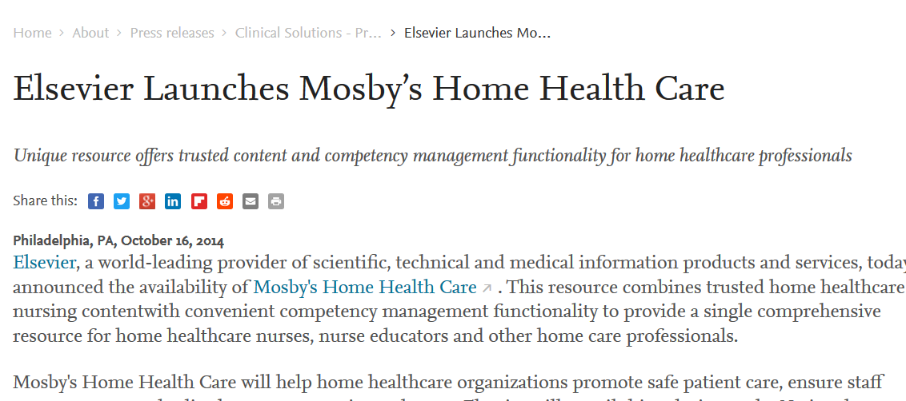
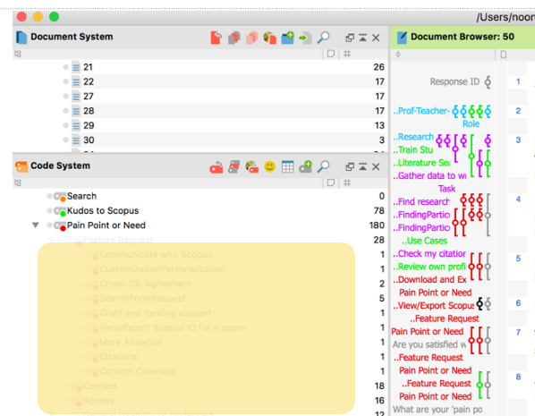
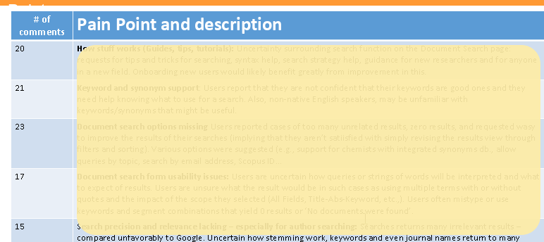
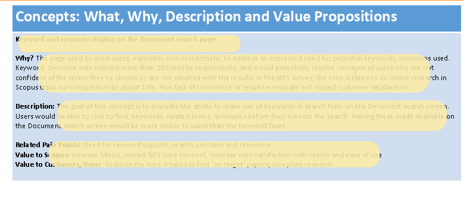
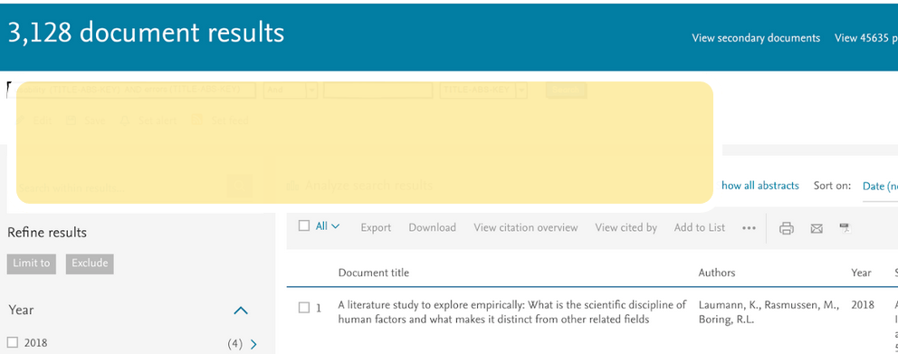
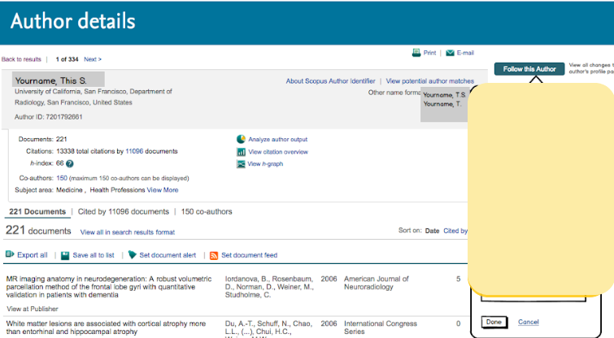
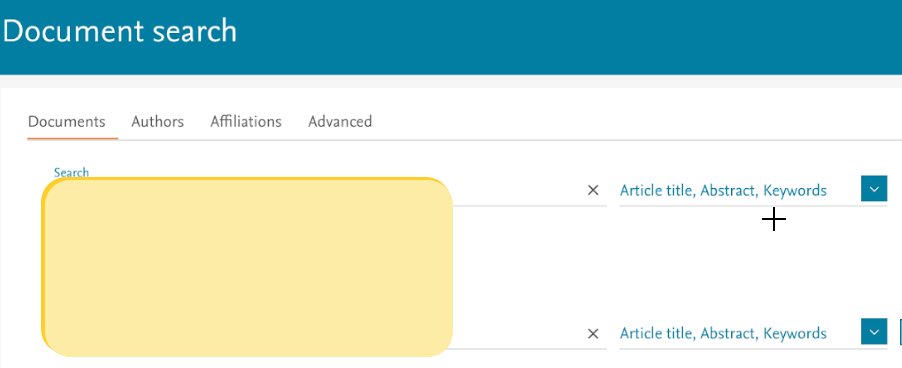

User Understanding
In most cases, I don't believe user understanding requires months and years of study for most projects. It can be as simple as desk research followed by some interviews. If you know nothing about your users (often not the case), some visits to observe their environment, working conditions, tools used, etc., is critical. Even then, a lot of data can often be captured quickly.
In other cases, there are legitimate reasons to use a multi-method approach to user understanding. We can never know too much about the people who use our products (as well as those who choose not to use them!). What is critical in all cases, is that we try to be as objective and aware of our own biases as we observe and interact with them. The wrong data is worse than no data at all.
Ethnographic study of home health care nurses
The health science division had long supported nurses working in hospitals, urgent care settings and other formal settings but never those involved in home health care. As the market for home health care had grown significantly, we decided to better understand the needs of home health care nurses to determine if we could develop a product to support them, given the likely overlap with some of our content. For this project, I did the following:
While our organization was well-versed in nursing needs in general, there was still uncertainty about needs that could be specific to this audience. My goal was to observe the resources and technology used by the nurse, the interactions with patients and caregivers, needs that we might be able to address among caregivers and patients and anything we hadn't considered.
- I developed, and had approved, a plan to conduct the user understanding effort
- I worked with a home care agency to coordinate 'ride alongs' with several nurses as they visited patients.
- Developed a set of interview questions for informal interviews when I had the opportunity to talk with them between visits.
- Developed scripts and conducted interviews with nursing educators
- Wrote a report for the team about user needs discovered during the study and developed personas for home health care nurses, nurse educators.
Among my findings were that much of our content from our hospital-based nursing product would be valuable in the home-care setting. However, additional needs had to be addressed including:
- Working in an non-sterile environment
- Content to be shared with caregivers and patients had to be at a lower-level (6th grade)
- Local language support of any content left with the patients (e.g., instructions) was critical
The project was approved on a seed-funding basis (would later come to fruition). One of my direct reports generated a concept prototype which we then tested over a series of iterations using webex to fine-tune with regards to their needs. The project continued to get support from upper management and finally a mobile product was created to serve the home health care nursing community.

Concept Formation and Evaluation
An effort to better understand experience users have as they search and find articles was initiated by product. I developed surveys to gather data from users with regards to searching and working with search results. Were there areas that are difficult or which are pain points? We conducted a survey, inviting users who were using the product at the time, to participate.
Once I captured data in the survey (both free-form comments and data surrounding user role, etc.) I used Maxqda to categorize the comments in terms of tasks and areas of the site.

Working with my product counterpart, we created a list of top pain points, and began creating concepts to address those that seemed to address the most critcal needs.


After grouping issues and evaluating their severity, we began to design concepts that would be used to gather data from a different set of users to evaluate their potential usefulness. Areas of the images below are covered to remove key concepts that have not been implemented, or tested.



This concept evaluation phase was postponed. We planned that once rating data was gathered for the concepts, if there are concepts that are highly rated, we would take those concepts and conduct one-on-one testing with users to capture more detailed comments, what may be missing, etc. At this point, the project was delayed.
In-office observations and interviews with university professors
THough we had spent a few releases developing features aimed at the professor and grad student market, we had not had the opportunity to fully understand the relevant personas. Myself and a colleague conducted a set of in-person interviews with our academic users (from grad students to full professors to understand their needs and pain points.
We combined this with concept testing we had planned to do in person, conducting semi-structured interviews followed up by their reviews on online concepts with the product we support.
- My colleague and I developed semi-structured interview scripts designed to allow us room to explore topics that emerged from the various users.
- We observed their work settings (usually offices, but sometimes labs, home offices, etc.), and took pictures
- We developed concept mockups to evaluate with the users
The visits also led to the development of a report of areas of satisfaction with our current product, ways in which our competitor was superior to our product and bulleted items for future needs.
Another deliverable were new personas (e.g., tenured researchers, new associate professors, etc.) used to guide later understanding.